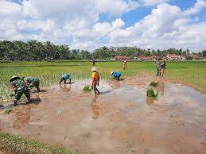
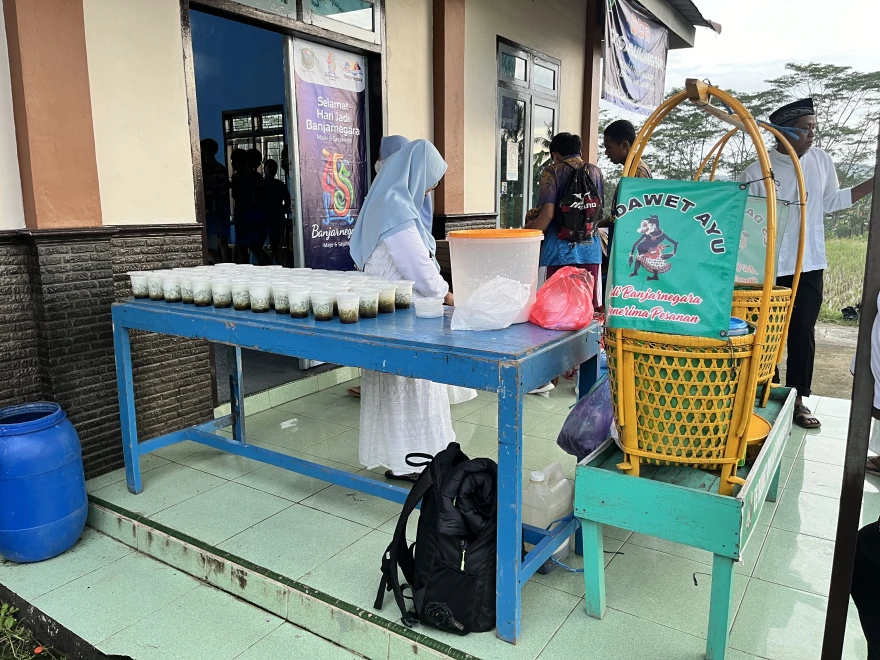
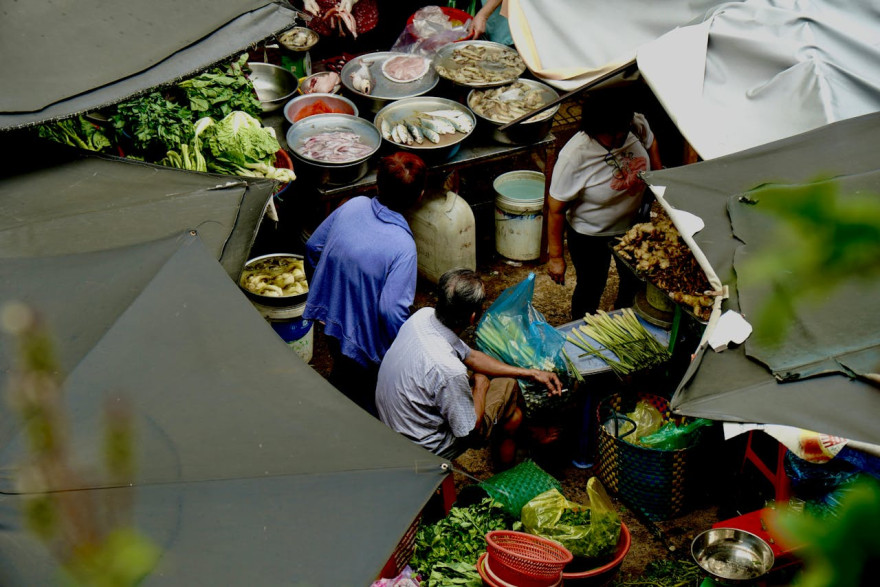

UMKM Desa Gumingsir
Potensi usaha mikro, kecil, dan menengah warga Desa Gumingsir

Hasil Pertanian
Padi, jagung, cabai, tomat, dan kacang panjang dari lahan sawah dan tegalan warga Desa Gumingsir.

Kuliner Rumahan
Usaha kuliner dan pengolahan hasil pertanian yang mulai berkembang di kalangan warga desa dalam beberapa tahun terakhir.

Peternakan
Sapi, kambing, ayam, dan itik yang dipelihara warga sebagai sumber pendapatan tambahan dan tabungan keluarga.

Kerajinan & Perdagangan
Pengrajin lokal dan pedagang kecil yang turut menggerakkan roda ekonomi desa secara mandiri.